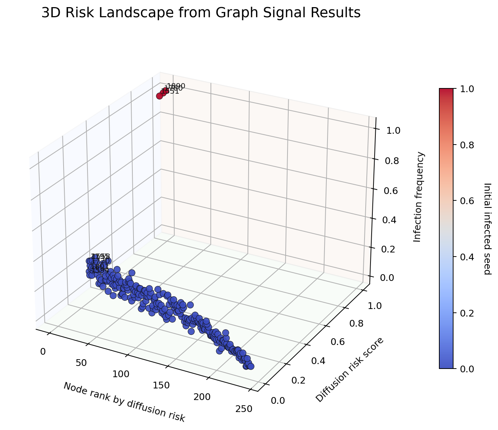
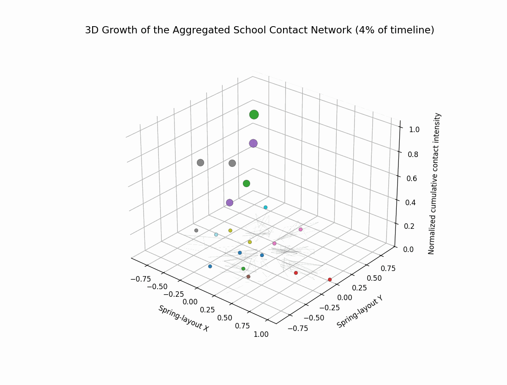
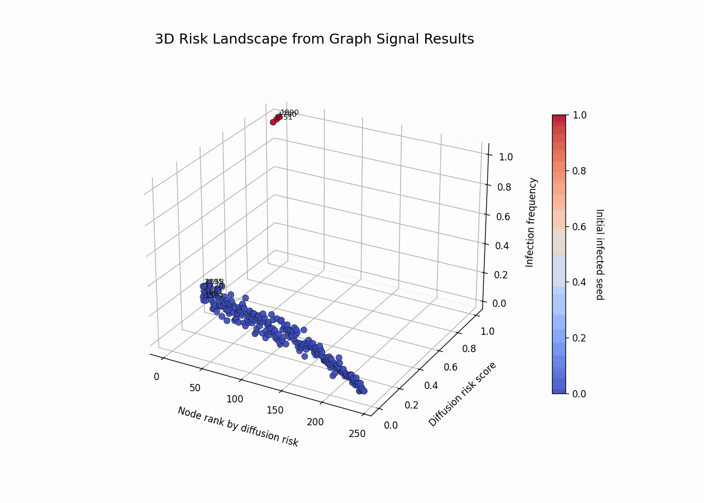
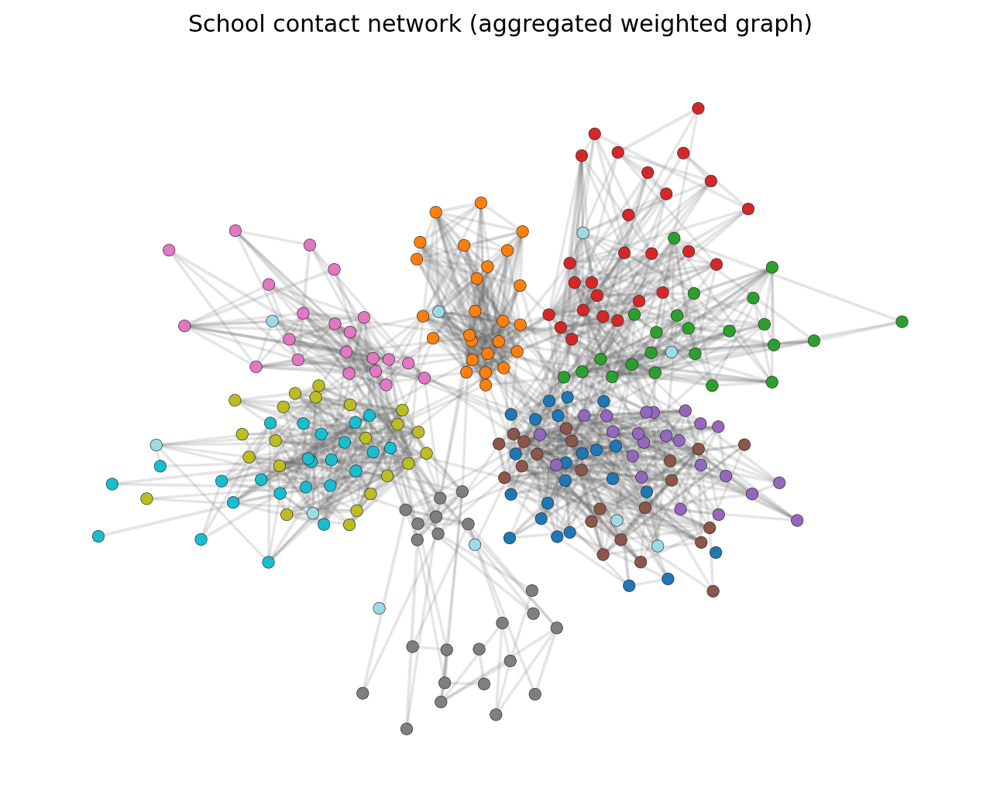
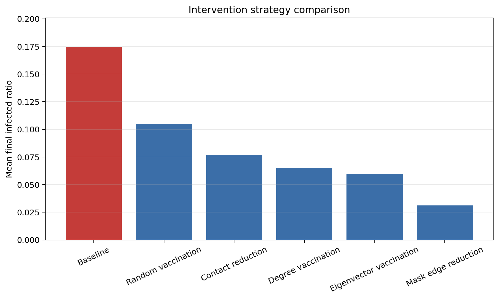
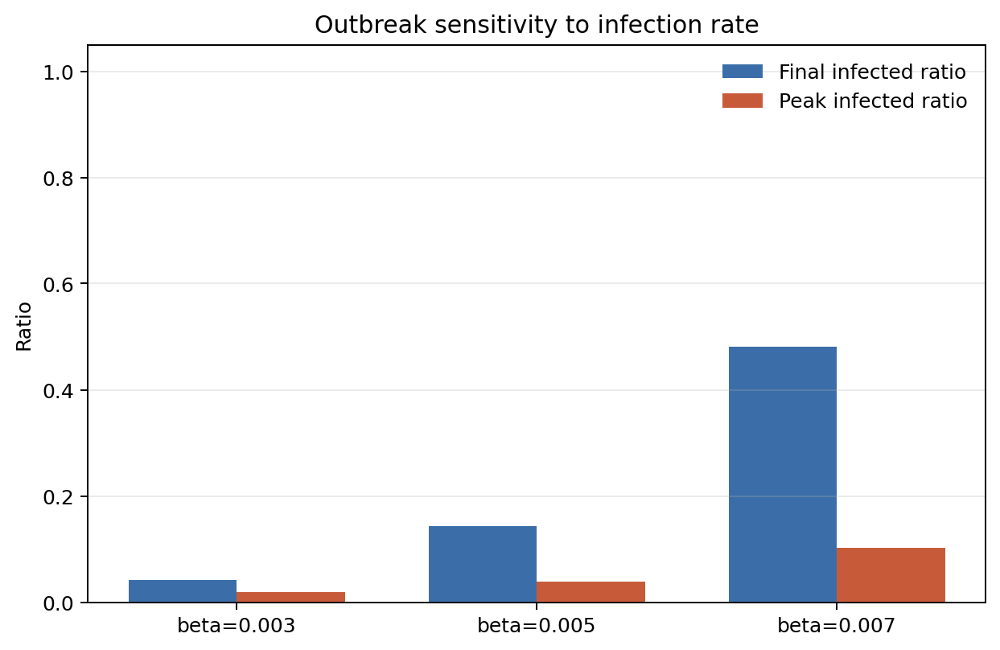
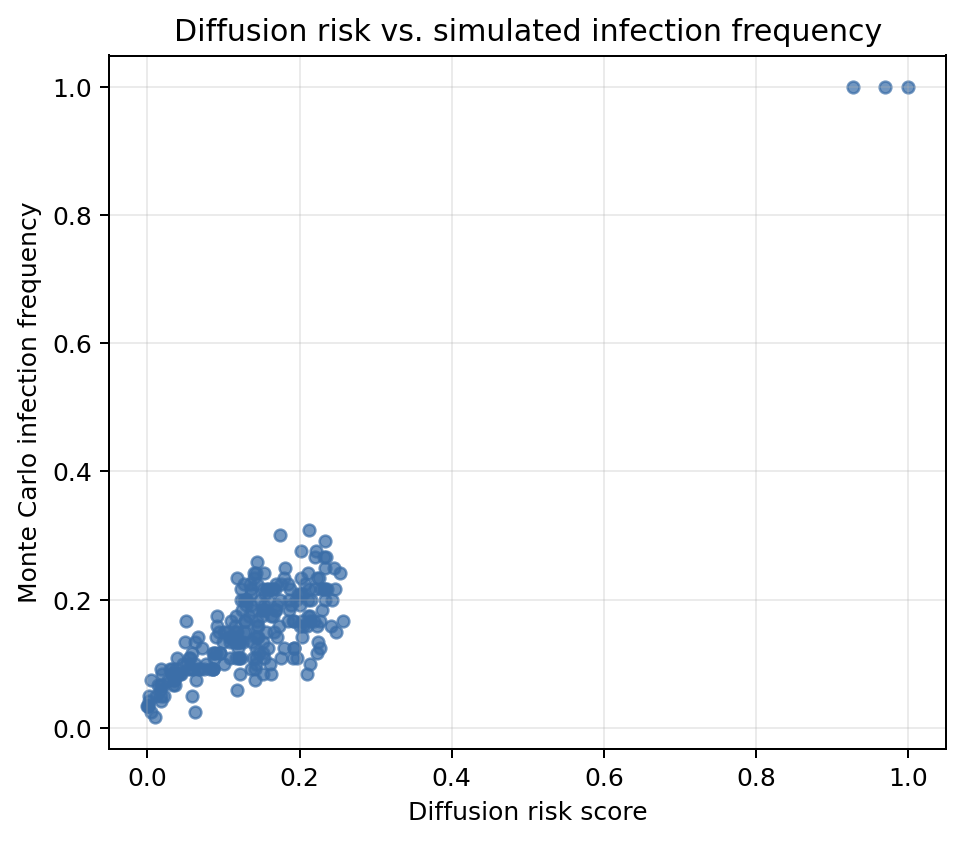
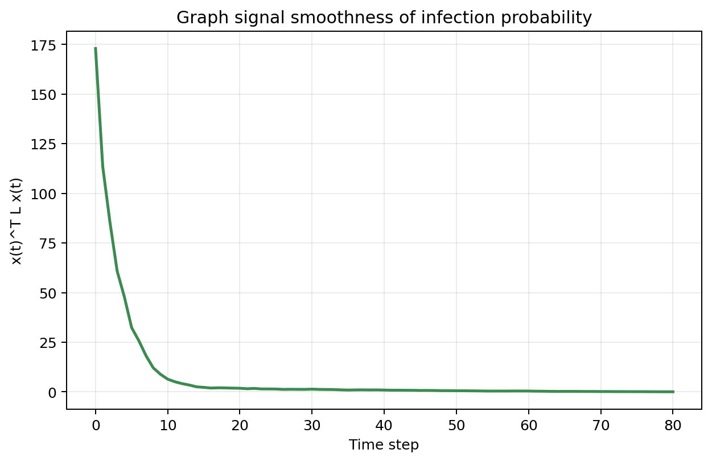

Cloudflare Worker Page
3D epidemic risk graph built directly from simulation results.
This page packages the school contact-network outputs into a publishable result viewer.
The hero visualization is a real 3D scatter generated from results/risk_scores.csv.

Animated 3D Views
Motion studies for the school contact network


Result Gallery
Supporting views from the pipeline




